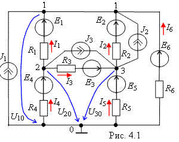

1. ФОРМИРОВАНИЕ РАСЧЁТНОЙ СХЕМЫ
Задача анализа разветвленной электрической цепи обычно сводится к нахождению токов ветвей и напряжений на различных участках цепи. Руководствуясь обобщенной схемой замещения цепи (рис. 4.1) и таблицей 4.1 вариантов задания необходимо вычертить в отчете расчетную схему цепи.
При этом ветви схемы цепи с незаданными источниками тока Jk необходимо разомкнуть (т. е. исключить), а участки цепи с незаданными идеальными источниками напряжения Ek заменить проводниками, оставив в ветвях резисторы Rk. В преобразованной схеме должны остаться два источника напряжения (ИН) и один источник тока (ИТ). Если ЭДС Ek или ток Jk задан со знаком "минус", то направление их стрелок на схеме целесообразно изменить на противоположное и в исходных данных записать со знаком "плюс". Условные положительные направления токов в ветвях и узловых напряжений указаны на рис. 4.1.
